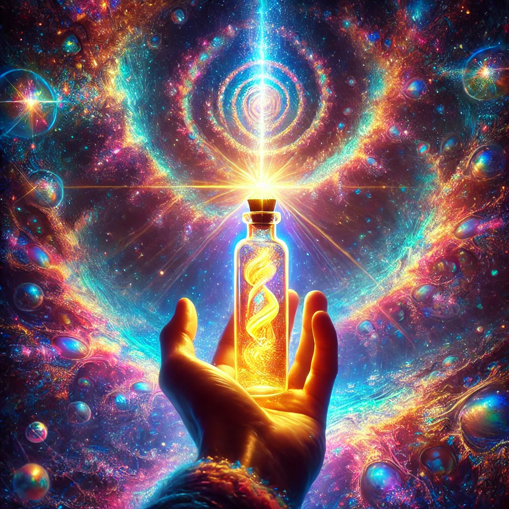

You reach for the glowing vial, its surface shimmering with iridescent colors that shift like liquid light. As you hold it, you feel a strange warmth spreading through your fingers, radiating up your arm and into your core.
“This is the Elixir of Insight,” the being says, its voice resonating in your mind. “With it, the veils of perception will lift, and the threads of existence will be revealed. But remember, once the mind expands, it cannot return to its previous state.”
You hesitate for a moment, then uncork the vial. The scent is sweet and strange, like a memory you can’t quite place. Closing your eyes, you drink, and the world dissolves into a kaleidoscope of fractals and colors. Voices—ancient, wise, and kind—whisper truths of the cosmos:
“All is connected. Flow with the universe, and it will guide you to your purpose.”
As the visions fade, you feel a profound understanding settle within you. The path ahead shimmers with possibility.

What will you do next?